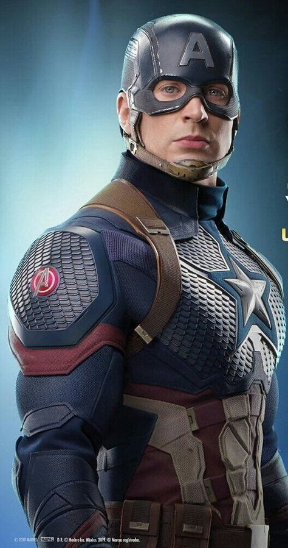
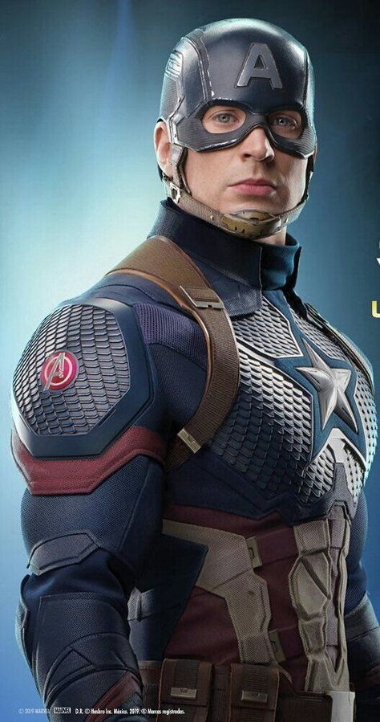

Captain america also known as Steve Rogers and was the part of the supersolider program headed
by Howard Stark.
He was a humble, charistamatic man with a good heart more than a strong body.
Steve once jumped in front of a fake grenade to save his team members from being blown up.
He is called Cap or Steve among the fellow avengers. All of them look upto him as their leader.
He is good with motorcycles and hand to hand combat.
The character wears a costume bearing an American flag motif, and he utilizes a
nearly-indestructible shield that he throws as a projectile. Captain America is the alter ego
of Steve Rogers, a frail young artist enhanced to the peak of human perfection by an experimental
"super-soldier serum" after joining the military to aid the United States government's efforts in
World War II


 
